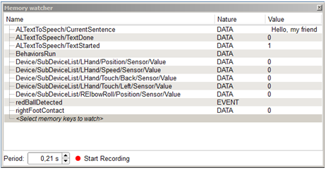

The Memory watcher panel allows you to display the value of events or data during the execution of a behavior.
Memory watcher has a Recording function allowing you to save a CSV file containing the history of event or data values during the recording.
| Column | Contains |
|---|---|
| Name | Names of selected Memory keys. |
| Nature | DATA / EVENT. |
| Value | Values of the Memory keys, updated according to Period. |
Be aware that the Memory keys displayed by the Memory watcher depend on the robot Choregraphe is connected to:
| A ... | Will display ... |
|---|---|
| Real robot | All possible Memory keys for the robot. |
| Choregraphe simulated robot | A fewer amount of Memory keys, according to its simulated skills: Example: no camera, no battery. |
| Simulated robot evolving in a virtual 3D world | Memory keys related to the perceived virtual world. Example: virtual camera but still no virtual battery. |
To select the set of Memory keys to watch:
| Step | Action |
|---|---|
Double-click the empty line displaying the <Select memory keys to watch>. The list of available Memory keys is displayed. |
|
| Click the checkboxes to select Memory keys. | |
| Click the OK button. |
The Memory watcher panel is getting periodically information directly from the robot, by request.
Setting the refresh period allows the user to set the time to wait between two requests.
To record Memory keys evolution:
| Step | Action |
|---|---|
| Select Memory keys to watch. | |
| Set the refresh period. | |
| Click the Start Recording button. | |
| Launch the behavior you want to audit. | |
When the behavior to survey is done, click the Stop Recording button. You are then prompted to save the CSV file. |